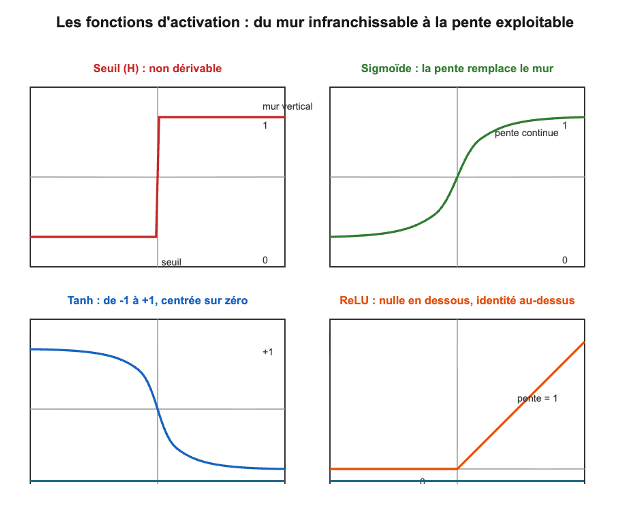
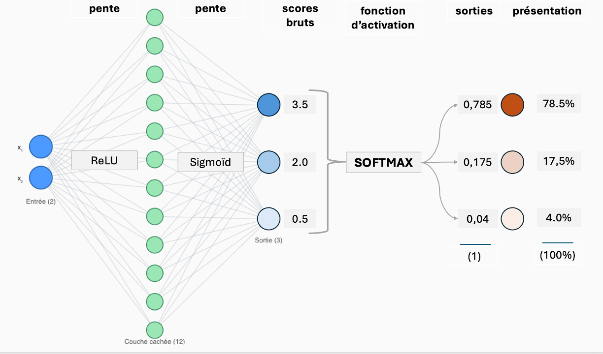

Composer des transformations
Combiner des neurones
Le perceptron est un classifieur binaire
Tout neurone coupe l'espace en deux parties avec une
frontière linéaire qui sépare sa zone d'activation de sa
zone d'inhibition.
En deux dimensions, c'est une droite qui sépare tout à 0 de tout à 1.
Détecter une figure convexe dans l'espace

Approximation d'un disque avec 12 droites |
On peut cibler toute figure convexe par de multiples droites
issues de multiples perceptrons. |
Couche cachée
Il faut deux niveaux : le découpage avec 12 neurones et la consolidation avec un neurone final.
Le découpage se fait par une couche cachée qui porte les neurones nécessaires.
La consolidation se fait à la couche de sortie par une combinaison
des sorties précédentes.
Elle répondra au final dans le disque (1) ou en dehors du disque (0).

C'est même la seule manière de faire car la fonction d'activation du perceptron est très limitée.
Apprentissage des couches : une limite du perceptron
Si la prédiction n'est pas sur le bon plateau, celui de la cible,
l'erreur à rattraper sera de 1 ou -1.
La correction doit faire des sauts brutaux : +1 (trop haut : descendre) ou −1 (trop bas : remonter).

On n'a aucun moyen de répartir cette erreur entière vers les neurones arrière de la couche cachée.
Cette incapacité a bloqué le développement des réseaux de neurones et provoqué l'hiver de l'IA.
l'hiver de l'IA
Ce qu'il reste du perceptron d'origine
Le mécanisme : Tout neurone continue de fonctionner sur le même principe de calcul d'un score brut qui sépare l'espace en deux parties.
Ce sont les fonctions d'activation qui transforment le score en prédiction qui ont évolué.
Le nom : On continue d'utiliser abusivement le terme, comme dans MLP -
Multi Layer Perceptron, alors que les neurones ne fonctionnent plus par dépassement de seuil.
L'idée qui a tout changé: remplacer le mur par une pente
Une fonction d'activation en pente douce (continue et dérivable,
bornée entre 0 et 1) permet de mesurer l'erreur.
Là où le seuil ne disait rien,
la position dit tout : la pente donne la direction ; la distance à la frontière donne l'écart à combler.

La surface de prédiction avec une fonction d'activation sigmoïde.
La frontière correspond à une valeur de sortie du neurone à 0.5
Pentes des fonctions d'activation les plus communes

Un bon entraîneur de modèle choisira ses courbes en fonction du problème à traiter
Fonctions d'activation pour la sortie d'un neurone
- A seuil (H) : abandonnée en entraînement.
- Sigmoïde (logistic, 1970s) : une courbe en S douce qui écrase toute valeur entre 0 et 1.
- Tanh : la même courbe en S, mais entre -1 et +1. Centrée sur zéro, elle converge souvent plus vite.
- ReLU (Rectified Linear Unit, popularisée en 2010) : si l'entrée est négative, sortie 0 ; sinon, sortie = entrée. Ultra simple à calculer, elle a permis d'entraîner des réseaux très profonds et a déclenché la révolution du deep learning.
Fonction de groupe pour les classifications multi-classes : Softmax
En couche de sortie, quand il faut choisir parmi n classes,
les fonctions d'activation des neurones de sortie produisent
des résultats numériques indépendants peu faciles à comparer.
La fonction d'activation Softmax reprend les scores de toutes les sorties
et produit une distribution de probabilité.
Les valeurs sont ramenées entre 0 et 1 et distribuées pour que leur somme fasse 1.
Cette distribution accentue les différences :
Plus un score dépasse les autres, plus sa probabilité devient disproportionnellement grande.

(Formule: Pour un vecteur des sorties initiales z = [z₁, z₂, ..., zₙ], on aura softmax(z)i = ezᵢ / Σ(ezⱼ) pour tout j.
C’est ainsi que sont présentés les scores de confiance dans les classifieurs multi-classes.
Aller au chapitre 3
Comprendre l'apprentissage : comment les poids se fixent.